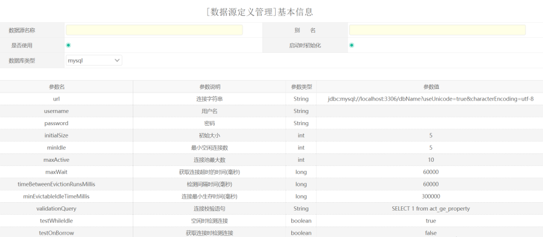
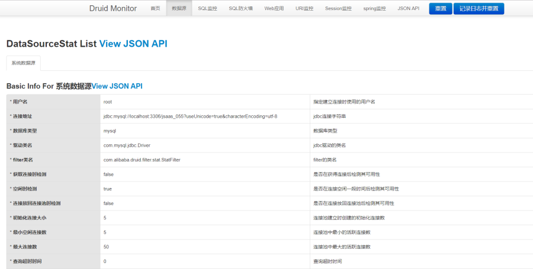

功能说明
数据源功能是用来访问第三方数据库的。
平台中数据源功能用途：
直接通过API获取数据源，访问第三方数据库，平台中自定SQL,自定义列表都有使用此功能。
切换数据源访问第三方数据库，平台中应用租户使用数据源，租户可以独立使用数据源对应的库。
这个功能一般由根租户管理员操作。
操作步骤
添加数据源

参数说明：
数据源名称：这个随便定义，易于理解的名称。
别名：系统中唯一的名称，一般使用英文
是否使用：这个决定数据源是否生效
启动时初始化：在web服务器启动时，同时根据数据源配置初始化数据源。
数据库类型：这个指的是支持连接的数据库类型，目前支持3个常用的数据库，mysql，oracle，sqlserver
下面的参数是需要参考 DRUID的参数来配置的，需要根据实际情况来配置。
initalSize:初始化大小
minIdle:空闲连接数
maxActive:连接池最大的连接数
具体参考：
测试连接
配置好参数后，用户可以点击测试，测试连接是否正确。
监控
监控功能是 druid 数据库连接池提供的功能，可以查看当前的数据源和SQL执行的情况监控。

具体可以参考druid 的文档介绍
开发者需要了解的API接口
默认数据源指的是，系统启动时使用的数据源。
类名 方法名称 com.redxun.core.database.datasource.DataSourceUtil DataSource getDataSourceByAlias(String alias);
根据数据源别名获取数据库连接文档JdbcTemplate getJdbcTempByDsAlias(String alias)
根据数据源别名获取JdbcTemplate 实例，操作数据库Connection getConnectionByAlias(String alias)
根据数据源别名获取数据连接，这个连接使用完成后
需要调用 该类的close(conn)方法关闭com.redxun.core.database.datasource.DbContextHolder void setDataSource(String alias)
调用此方法切换到指定的数据源，这个切换不能在事务层使用。
一般在控制器层切换或者过滤器中进行切换。void setDefaultDataSource()
切换成默认数据源。